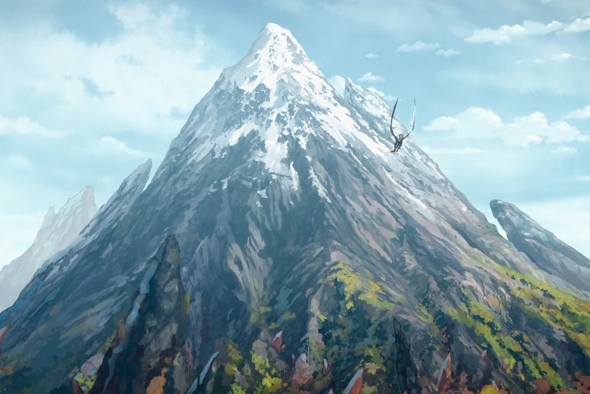

Ziemia
Opis
Magia Ziemia czerpie moc i energię w samej krainie. Magia ziemi pochodzi z dwóch głównych domen: kamienia, minerałów, kryształów i klejnotów ziemi oraz flory i fauny świata żywego. Stworzenia związane z Ziemią, takie jak Elfy Krwawej Ziemi, są cierpliwe, czasami uparte i głęboko troszczą się o historię i równowagę świata przyrody.
Tajemnica
Tajemnica Ziemi skupia się wokół odporności, siły, cierpliwości i harmonii z naturą.
Splot
Splotem Ziemi jest Umber Tor, potężny pas górski na dalekim wschodzie Xadii, częściowo otoczony przez Smoczą Gęstwinę, region znajdujący się w Nieznanym Lesie. Góra posiada wiele podziemnych jaskiń, w tym trzy "Strefy Zagrożenia". Jest to również legowisko Rexa Igneousa, Arcysmoka Ziemi.
Quiz